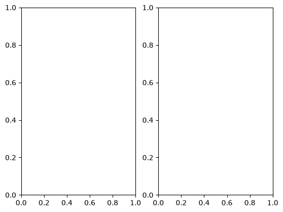
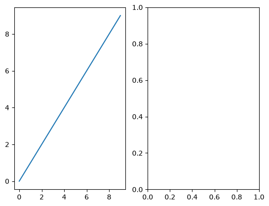
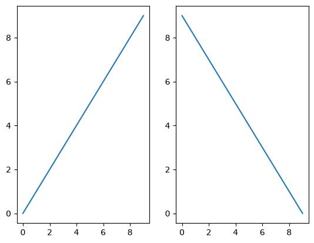
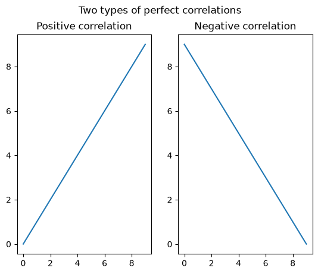
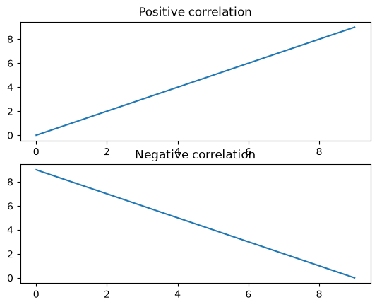
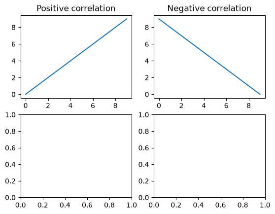
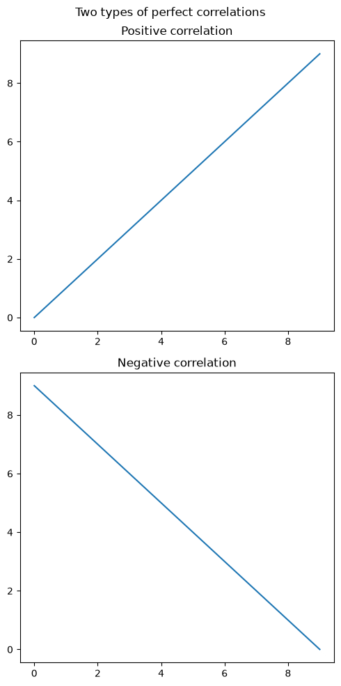

Subplots#
Questions#
How can I make a figure containing more than one plot?
Learning Objectives#
Generate figures with subplots, using object-oriented plotting in Matplotlib
Modify properties of figure subplots, such as size and layout
Introduction#
A great feature of Matplotlib is that you can create a single figure with multiple panels, or subplots. We’ll get lots of practice doing this in the section on single unit data.
As you might have intuited, the plt.subplots() function can be used to create a figure with multiple subplots. Its default is to create a single (sub)plot, but we can create more subplots by passing arguments indicating the number of rows and columns of subplots we want (thinking of subplots as a 2D grid).
For example, to create a figure with one row and two columns of subplots, we would use:
fig, axs = plt.subplots(nrows=1, ncols=2)
You can actually omit the nrows= and ncols= kwargs, and just use:
fig, axs = plt.subplots(1, 2)
Matplotlib assumes the first two arguments are the number of subplot rows and columns. This is more compact code, although less transparent/explicit than using nrows= and ncols=
Note that in the above examples, we have replaced ax with axs. This is a convention, not a requirement, but it makes explicit the fact that the ax variable now contains multiple axes objects, which is how we specify which subplot to draw into with any command.
Try running the following code, which will generate a figure with two subplots, and print out what the axs object contains:
import matplotlib.pyplot as plt
x = range(0, 10)
y = range(0, 10)
fig, axs = plt.subplots(nrows=1, ncols=2)
print(axs)
[<Axes: > <Axes: >]

The output is a little confusing because the plt.subplots() function generates an empty plot, but this appears under the result of printing the axs, even though the plot command was run first.
Regardless, note that the axs object contains two AxesSubplot objects. This means that to access (and draw into) one of these objects, we can use indexing on axs. For example, to draw into the first subplot, we can use axs[0]:
fig, axs = plt.subplots(nrows=1, ncols=2)
axs[0].plot(x, y)
plt.show()

To draw into the second subplot, we use axs[1]:
# generate different data for second plot, going from 9 to 0
y2 = list(reversed(range(10)))
fig, axs = plt.subplots(nrows=1, ncols=2)
axs[0].plot(x, y)
axs[1].plot(x, y2)
plt.show()

We can modify properties of each subplot separately, using their axs indices. We can also modify properties of the entire figure (such as an overall title) using fig. methods:
fig, axs = plt.subplots(nrows=1, ncols=2)
# First subplot
axs[0].plot(x, y)
axs[0].set_title('Positive correlation')
# Second subplot
axs[1].plot(x, y2)
axs[1].set_title('Negative correlation')
# Set overall figure title
fig.suptitle('Two types of perfect correlations')
plt.show()

2D subplots#
When you have a figure with multiple rows and columns of subplots, the indexing of AxesSubplot objects is two-dimensional. This is similar to indexing a pandas DataFrame, where we might specify a position with [row, column] indexing (e.g., df.iloc[1, 2] to get the second row, third column).
The only tricky thing about this is that if you have a one-dimensional figure (i.e., one row and multiple columns, or one column and multiple rows), you only need to use a single index (the column or row position, respectively), as shown in the examples above. However, as soon as you generate a figure with multiple rows and columns, you need to use two-dimensional indexing.
So, for example, with one column but two rows, we can use the following:
fig, axs = plt.subplots(nrows=2, ncols=1)
# First subplot
axs[0].plot(x, y)
axs[0].set_title('Positive correlation')
# Second subplot
axs[1].plot(x, y2)
axs[1].set_title('Negative correlation')
plt.show()

But when we have two rows and two columns, we need to use 2D indexing:
fig, axs = plt.subplots(nrows=2, ncols=2)
# First subplot
axs[0, 0].plot(x, y)
axs[0, 0].set_title('Positive correlation')
# Second subplot
axs[0, 1].plot(x, y2)
axs[0, 1].set_title('Negative correlation')
plt.show()

Basic Formatting with subplots#
Figure size#
You might have noticed two annoying things about the above figures with subplots. Firstly, the subplots aren’t square, but our x and y axes cover the same range, so ideally they would be of the same length in the plot. We can set the figure size with an additional figsize kwarg to plt.subplots(), giving it a list of [width, height]. Note that this specifies the width and height of the entire figure. So in the example below, since we are plotting two rows and one column, we make the height double the width:
fig, axs = plt.subplots(nrows=2, ncols=1, figsize=[5, 10])
This can require some trial-and-error, because the height in this case also includes the plot titles, so the results will not look perfectly square.
Avoiding overlap#
The other annoying thing is that, specifically in the two-row-one-column plot above, the title of the bottom subplot overlaps with the tick labels for the top x axis. Matplotlib has a handy function that automatically corrects this in most cases:
plt.tight_layout()
To put this altogether, try the following:
fig, axs = plt.subplots(nrows=2, ncols=1, figsize=[5, 10])
# First subplot
axs[0].plot(x, y)
axs[0].set_title('Positive correlation')
# Second subplot
axs[1].plot(x, y2)
axs[1].set_title('Negative correlation')
fig.suptitle('Two types of perfect correlations')
plt.tight_layout()
plt.show()

Summary of Key Points#
Using
plt.subplots(), we can generate figures containing multiple subplotsThe number of rows and columns of subplots in a figure is set by the
nrows=andncols=kwargs, or alternatively just providing the number of rows and columns as the first arguments toplt.subplots()When creating a figure with subplots, it’s good practice to assign the result to
fig, axsrather thanfig, ax, to reflect the fact thataxsis an object containing all of the axesThe different axes of a subplot are accessed (such as for drawing into, or modifying properties) using indexing, as in
axs[0]If a figure’s layout is two-dimensional (i.e., > 1 rows and > 1 columns), then two-dimensional indexing is required for axes (e.g.,
axs[0, 1])The figure’s overall size is set by the
figsize=kwarg toplt.subplots()Avoid overlapping elements in subplots by running
plt.tight_layout()right beforeplt.show()
This section was adapted from Aaron J. Newman’s Data Science for Psychology and Neuroscience - in Python.